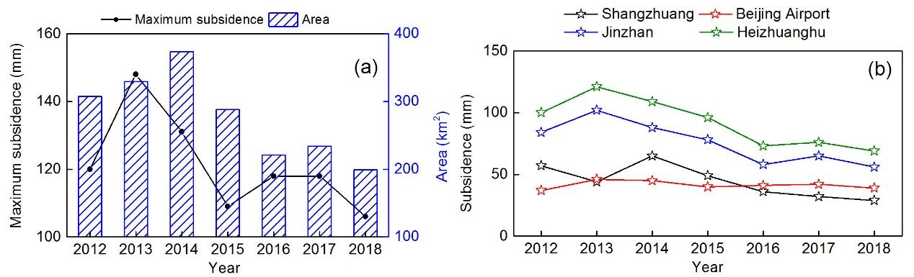
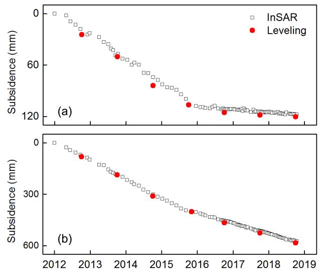
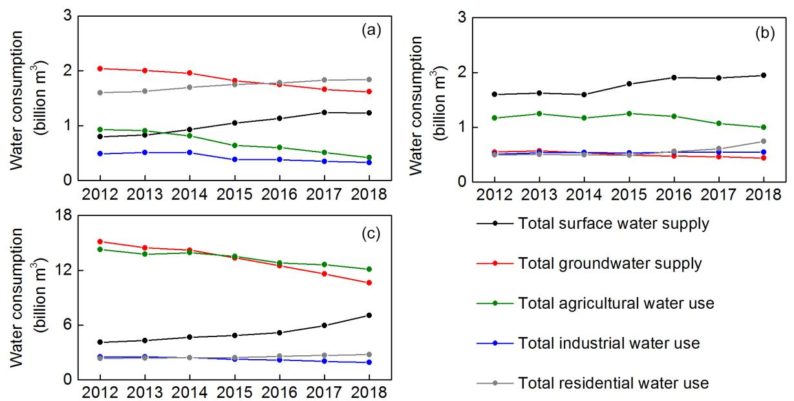
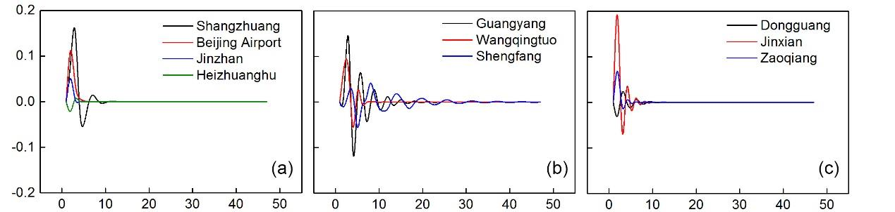
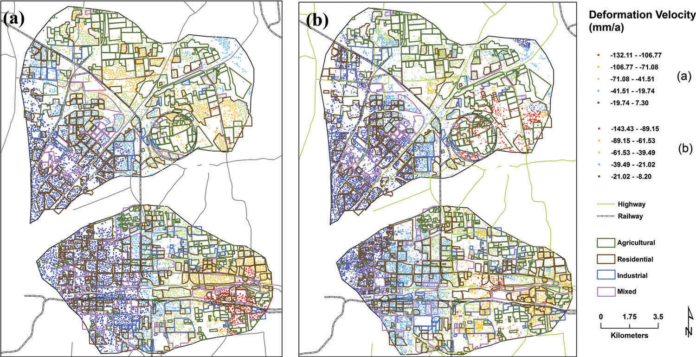
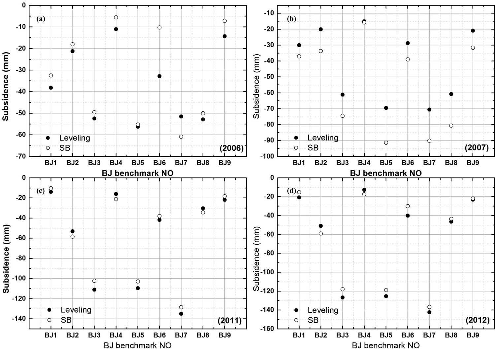

Correlation between LULC and Land Subsidence
Investigation on the correlation between land subsidence and LULC
Background
To understand the correlation between LULC and Land Subsidence.
Previous studies carried out in a regional-scale might be useful for estimating the correlation between land subsidence and groundwater extraction, but inadequate for local safety management as subsidence may vary over different areas with detailed characters1.
The study is foused promarily on subsidence pheomenon in local, can patchy scales, repectively with Sentinel-1 dataset acquired from May 2017 and November 2021.
In order to undetstand the subsidence in a more systematic way, some -20cm subsidence zones have been selected and analyzed.
Further analyses conducted over multiple scales show that industrial usage of groundwater is not always the dominant factor that causes the land subsidence and indeed it does not always create large land subsidence either. Regions experiencing subsidence is due to a combined impact of a number of factors, e.g., residential, industrial or agricultural activities.
Several types of land subsidence could be expected to occur in xuzhou region.
Aim of this study
-
analyse the spatial pattern of horizontal movement with both descending and ascending pairs.
-
quantify the rate and magnitude of land subsidence over subsiding zones during 3year period.
-
investgate spatially explicit variations in selected hot-spot regions,
Dataset and Methodology
131 C-Band Sentinel-1A image (Orb-142 Frame-106 Ascending) from May 2017 to Nov. 2021 were exploited to map the land subsidence in Xuzhou City, Jiangsu, China.
Figure 1 depict the sentinel-1A based mean velocity maps in LOS direction from ascending mode as regards to the regional-scale land subsidence in Xuzhou. The displacement results are resampled to a grid of 30 * 30 m.


As xuzhou is a very large metropolitan, in order to study the local subsidence throughly, the ideal way is to segregate the entire ROI into target sub-zones.
Hence, the local council can deal with these zones separately, and this could also help these organizations to achieve the maximum efficiency.
Many researchers selected the targeted zones with rectangle- or quadrilateral- window over areas suffering from the largest subsidence. Nevertheless, as the sinking phenomenon is correlated in the spatial domain, the sub-regions suffering from the land subsidence are more likely to be in an oval or round shape. Contour maps can be used to outline the precise boundaries of these subsiding zones, and it is introduced following three-step GIS-based interpolation processes: 1) a good number of characteristic points are extracted from the original Sentinel-1 derived MVM in vertical direction, 2) smoother mean velocity map (SMVM) is generated with these characteristic points, and 3) the 2-cm-interval contour map can be finally estimated from SMVM.
Contour Map
most severe subsidence bowls
To exam the land-use types corresponding to each subsiding zone, MLC is exploited to classify the corresponding optical image acquired from Sentinel-2A with the resolution of 20 m. The classification result is demonstrated in Figure 5 (b), and the entire region is primarily categorised into four classes: i) residential usage, ii) industrial usage, iii) agricultural usage, as well as iv) vegetation.
As the MS pixels only exist over regions categorised as classes i and ii, the subsequent analysis thus primarily focused on these two classes.
Land Subsidence response to Different Land Use Type in BTH
In this paper, an interferometric point target analysis (IPTA) with small baseline subset InSAR (SBAS-InSAR) technique was used to derive the land subsidence2.
The analysis reveals that the average subsidence rate reached 118 mm/year from 2012 to 2018. Eleven subsidence features were identified.
Comparing the different types of land use in subsidence feature areas, the results show that when the land-use type is relatively more complex and superimposed with residential, industrial and agricultural land, the land subsidence is relatively more significant.
Moreover, the land subsidence development patterns are different in the BTH areas because of the dfferent methods adopted for their water resource development and utilization, with an imbalance in their economic development levels. Finally, we found that the subsidence changes are consistent with groundwater level changes and there is a lag period between land subsidence and groundwater level changes of approximately two months.
Research Content
In this paper2, the Interferometric Point Target Analysis (IPTA) with SBAS-InSAR technique was used to derive the land subsidence in the BTH region from 2012 to 2018 with 126 Radarsat-2 and 184 Sentinel-1 images. Then, the development of land subsidence in BTH was preliminarily investigated. On this basis, we analyzed the spatial and temporal evolution characteristics of typical subsidence features . Finally, we discussed the land subsidence response to different land use types and water resource utilization in typical subsidence features.
Data Source
Sentinel-1A
Sentinel-1 as the first satellite developed by the European Commission (EC) and the European Space Agency (ESA) for the Copernicus global earth observation project which launched in April 2014. This satellite carries a C-band SAR, with a revisit period of 12 days. For this paper, we chose an Interferometric Wide swath (IW) imaging mode with a medium resolution (5 m * 20 m).
DEM
The external DEM data we selected are the Shuttle Radar Topography Mission DEM (SRTM DEM) data with 90 m resolution.
Groundwater Monitoring Well
Furthermore, we chose the groundwater monitoring wells near the subsidence features, to compare subsidence changes with groundwater level changes. Because we only had permission to obtain the groundwater level before 2015, only the subsidence obtained by Radarsat-2 from 2012 to 2015 is included in this analysis.
Results in BTH
In Figure , Zhou and Gong2 find that the spatial distribution of the land subsidence rates in Beijing is quite different. The annual subsidence increased from 2012 to 2013, during which the maximum subsidence increased from 120 mm to 148 mm. The maximum subsidence decreased from 148 mm in 2016 to 106 mm in 2018. Furthermore, the area of land subsidence exceeding 50 mm (Figure) is calculated and four subsidence features (Figure) are identified.

From 2012 to 2014, the area of land subsidence over 50 mm shows an increasing trend from 308 km2 to 374 km2 even though the maximum subsidence decreased from 148 in 2013 to 131 in 2014. After 2014, the area of land subsidence over 50 mm and the annual subsidence especially show a decreasing trend.
As seen in figure above, the subsidence in the Jinzhan and Heizhuanghu area shows a similar trend, which increased from 2012 to 2013 and decreased from 2013 to 2018. Significantly, this subsidence was maintained at approximately 40 mm from 2012 to 2018 in the Beijing Airport area, so we should pay attention to its development.
Nevertheless, although the land subsidence decreased, but the subsidence range in space did not decrease.
Accuracy Assessemtn of InSAR Resules and Leveling Data
To evaluate the accuracy between the InSAR-derived subsidence from the Radarsat-2 and Sentinel-1 data and the leveling data, we converted the InSAR results into vertical displacements using a trigonometric equation and neglected the horizontal component of movement.

Discussion
Land Subsidence with different land use type
As seen in Figure and Table, the land-use in subsidence features of Xuzhou is relatively complex2. The maximun subsidence is in XXX areas exceeds 100 mm/year. In Yunlong area, the dense residential land and high population density in the area lead to a considerable water demand.
As for Feng-Pei county, the dense population as well as agricultural and industrial lands there all result in an increasing demand of water and furture aggravation of land subsidence. A large number of water-consuming plants and crops are planted in this region, and 85% of the well water is used for residents’ lives and agricultured production.
Unlike the Feng-Pei area, Gulou mainly fouces on industry, mainly the coal industry, in particular, involves high water consumption industry. Industry with high water consumption may leads to the serious development of land subsidence in this area.
The serious land subsidence could affect the urban public facilities, transportation and buildings, such as the damage of urban underground pipe network, the instability of railway subgrade and cracks of buildings.
Remote Sensing Image of Different Area
Land Subsidence Response to different water use
As seen in Figure, we found that the different area rely on different water supply. Xuzhou supplied water mainly from the groundwater, while the Feng-Pei mainly supplied suface water.
From the poing of view of water consumption, Xuzhou needs more water for residential use, while Feng-Pei need mire water for agricultrual use. The water for residential use in Xuzhou showed an increasing trend.
In summary, after 2015, the exploitation of underground water decreased and the supply of surface water increased, which slowed the land subsidence in BTH.

The reason that behind groundwater level fluctuation
The groundwater level is the lowest around May to August in wells h to j, possibly because these wells are located in Hengshui of the Hebei area, which is one of the national grain bases.
Because the irrigation period of this crop is February and March, and the precipitation is lower at this time, the groundwater exploitation volume is large, and the groundwater level drops significantly.
Furthermore, the comparison results of land subsidence changes and groundwater level changes reveal that the subsidence changes are consistent with the groundwater level changes, showing a seasonal trend. Meanwhile, we found that there is a time lag between land subsidence and groundwater level.
Time lag investigation betweeb subsidence change and grooundwater level change
Furthermore, we applied the IRF method to investigate the lag time between subsidence change and groundwater level change. The ADF test and IRF results are shown in Table 3 and Figure 14, respectively. It can be seen from Figure 15 that groundwater level change has an obvious effect on land subsidence at each subsidence feature, and this effect has a lag effect.

Conclusions
Because of the rapid growth of population and the development of industry and agriculture in BTH, the regional water demand is huge. However, the over-exploitation of groundwater in the BTH is obvious due to the shortage of water resources, which leads to the serious land subsidence in BTH. The serious subsidence in BTH resulted in the elevation loss, damage of roads, bridges, underground pipes and other municipal facilities, urban flooding and hydrops.
Land Subsidence under Different Land Use in the Eastern Beijing Plain
This paper is organized as follows. We first present the location and geological settings of Beijing plain, followed by the data and method used in this study. After we summarize the settlement information obtained using SBAS technique and compare our results with leveling observations in our study area, we present the distribution characteristics of land subsidence under different land use . We then discuss the causes of subsidence and why the settlement occurred only in these specific locations . Finally, we give some conclusions of this paper3.
Data Source
In this paper, we have two part of SAR data, one is 47 ENVISAT ASAR ascending orbit images via June 2003 and August 2010, another is 29 RADARSAT-2 images which were acquired from the descending orbit between November 2010 and September 2014.
We used Advanced Spaceborne Thermal Emission and Reflection Radiometer Global Digital Elevation Model (ASTER GDEM) data of 30 m to remove the topographic phase for ENVISAT ASAR during SBAS interferometry. The topographic phase was removed using Shuttle Radar Topography Mission Digital Elevation Model (SRTM DEM) data of 90 m for RADARSAT-2 during IPTA.
| SAR Data | ASTER GDEM(mm/a) | SRTM DEM(mm/a) |
|---|---|---|
| ENVISAT ASAR | 0.523 | 0.529 |
| RADARSAT-2 | 1.506 | 1.205 |
To classify the land use in the Laiguangying and Dongbalizhuang - Dajiaoting land subsidence areas, we used optical Google Earth image in 2005. The groundwater information for 200 - 2013 is acquired from four groundwater level monitoring wells located in the study areas.
Data Processing
SBAS
SBAS was originally proposed by Berardino et al4. The StaMPS SBAS method minimizes the separation in time and the Doppler frequency range of the acquisition pairs to maximize the correlation of the interferograms formed. Selecting image pairs whose perpendicular, temporal, and Doppler separations are below the threshold values, which depend on data availability for the specific application and the expected rate of decorrelation for the given terrain, ensures that the resultant network of image pairs contains no isolated clusters.
IPTA
- Master image selection
- Image registreation
- Image differential interference processing
- Interferometric point target extraction
- Phase unwarpping
- Residual phase removal
- Deformation calculation
Result
Time Series land subsidence
The land subsidence rate maps generated from the ENVISAT ASAR and RADARSAT-2 data are shown in Figure, respectively. The results indicated that the spatial distribution of the land subsidence rates varies widely.
For 2005 - 2010, we detected 13,107 SFP pixels through the SBAS technique; the maximum mean land subsidence rate reached 32.11 mm/a and the minimum mean land subsidence rate reached 7.3 mm/a. For 2011 - 2013, we detected 56,626 PS points through the IPTA method; the mean land subsidence rate ranged from 143.43 to 8.2 mm/a.

Land subsidence areas showed uneven distribution characteristics. The research area is located in the key mining area of groundwater, and the land-use type is rich, which maybe leads to the uneven development trend of land subsidence from 2005 to 2013.
SBAS accuracy assessment
To ensure the accuracy of SBAS and IPTA monitoring data, we compared land subsidence results, respectively, derived by SBAS and IPTA with level monitoring results.
Here, we chose PS points (the SFP points of the SBAS method) within 100 m of the leveling benchmarks, and we averaged the displacement values around the benchmarks.

As seen, there is great agreement between SBAS, IPTA, and leveling measurements. However, certain error between the two measurement results is inevitable.
The correlation coefficient (the confidence level at 95%) was 0.945 for 2006, 0.98 for 2007, 0.995 for 2011, and 0.994 for 2012.
Spatial characteristics of land subsidence in different land use

Subsidence due to groundwater in agricultural and industrial areas
The groundwater level in the Beijing plain rapidly decreased because of the large amount of groundwater extraction that led to land subsidence. From 2003, with the rapid development
and increasing groundwater exploitation in the eastern suburbs of Beijing, the regional groundwater level was gradually reduced, leading to an expansion of the groundwater overdraft area, and the groundwater level decline increasing year after year.
Unfortunately, most detailed information about groundwater mining in recent years in Beijing is not publically accessible. Therefore, in this study, we only had groundwater
information for 2005 - 2013 from four groundwater level monitoring wells located in the study areas.
The land subsidence trend was consistent with the dynamic change of the groundwater level, the groundwater level was in a state of continuous decline, and the ground subsidence was continuously increasing.
本博客所有文章除特别声明外，均采用 CC BY-SA 4.0 协议 ，转载请注明出处！